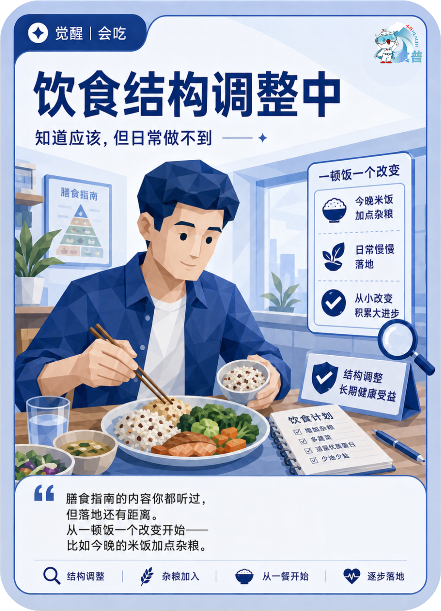

慢病管理人群
觉醒
会吃
C14
饮食结构调整中
知道应该,但日常做不到
膳食指南的内容你都听过,但落地还有距离。从一顿饭一个改变开始——比如今晚的米饭加点杂粮。
手机端可点击“打开原图”后长按图片保存；也可以直接长按上方图卡保存。

知道应该,但日常做不到
膳食指南的内容你都听过,但落地还有距离。从一顿饭一个改变开始——比如今晚的米饭加点杂粮。
手机端可点击“打开原图”后长按图片保存；也可以直接长按上方图卡保存。